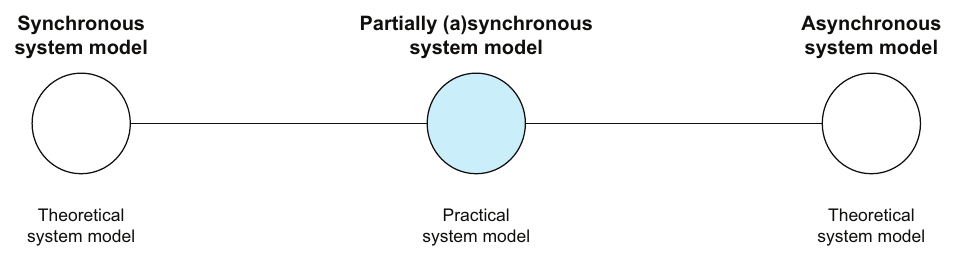
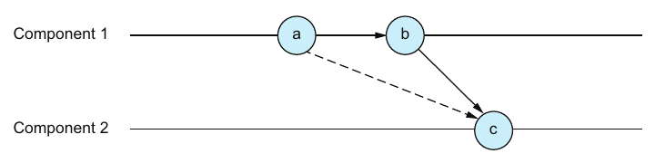
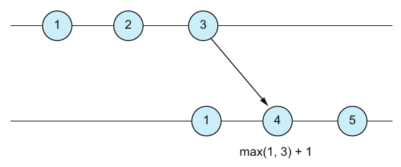

فصل ۲ · صص. ۲۳–۳۹
مدل سیستم، ترتیب و زمان
System models, order, and time
Think Distributed Systems, 1st Edition
هر الگوریتمی فقط نسبت به یک مدل سیستم درست است: مجموعهای از فرضها دربارهی مؤلفهها و شبکه و زمانبندی (ص. ۲۴). این فصل مدلهای زمانبندی را میگردد، یعنی همگام، asynchronous با هیچ یا با درکی ضعیف از زمان، و نیمههمگام، و مدلهای شکست مؤلفه را، یعنی Crash-Stop و Omission و Crash-Recovery و بیزانسی، و شکستهای شبکه را، یعنی بیترتیبی و تکراری و گم شدن (صص. ۲۵–۳۰). بعد مدل سیستم واقعبینانهی نویسنده را بیان میکند: نیمههمگام، با مؤلفههای غیربیزانسی که crash میکنند و برمیگردند، روی شبکهای نامطمئن (ص. ۳۰).
نیمهی دوم دربارهی ترتیب است. بیشتر کنشها جابهجاپذیر نیستند، پس برقرار کردن ترتیب بنیادی است (ص. ۳۰). فصل شرایط مسابقه را روی اجراها تعریف میکند و نمونه را با یک coordinator که درخواستها را برچسب میزند اصلاح (صص. ۳۰–۳۲). رابطهی happened-before از Lamport و علیت و تعریفی دقیق از concurrency در برابر موازیکاری را میپوشاند (صص. ۳۲–۳۵). و با consistency ساعت و دو گونه ساعت تمام میشود: ساعتهای فیزیکی با skew و drift و NTP و ساعت زمانروز در برابر یکنوا، و ساعتهای منطقی با ساعت Lamport و offsetهای Kafka و شمارههای ترتیب etcd (صص. ۳۵–۳۸).
فهرست خود فصل (از فهرست مطالب کتاب)
- ۲.۱ مدلهای سیستم — ص. ۲۳
- ۲.۱.۱ نظریه و عمل — ص. ۲۴
- ۲.۱.۲ سیستمهای توزیعشدهی synchronous — ص. ۲۵
- ۲.۱.۳ سیستمهای توزیعشدهی asynchronous — ص. ۲۵
- ۲.۱.۴ سیستمهای partially synchronous — ص. ۲۶
- ۲.۱.۵ رفتار مؤلفه و شبکه — ص. ۲۷
- ۲.۱.۶ مدلهای سیستم واقعبینانه — ص. ۳۰
- ۲.۲ ترتیب و زمان — ص. ۳۰
- ۲.۲.۱ رابطهی happened-before — ص. ۳۲
- ۲.۲.۲ زمان و ساعت — ص. ۳۵
- ۲.۲.۳ زمان فیزیکی و ساعتهای فیزیکی — ص. ۳۵
- ۲.۲.۴ زمان منطقی و ساعتهای منطقی — ص. ۳۷
- ۲.۲.۵ ساعت فیزیکی در برابر ساعت منطقی — ص. ۳۸
از کتاب
۲.۱ مدلهای سیستم
یک مدل سیستم مجموعهای از فرضها دربارهی مؤلفههای سیستم و شبکهاش و رفتار زمانیاش است (جدول ۲.۱) (ص. ۲۴):
| یک مدل سیستم | مدل سیستمی دیگر |
|---|---|
| مؤلفهها نمیتوانند شکست بخورند | مؤلفهها میتوانند شکست بخورند |
| پیامها نمیتوانند گم شوند | پیامها میتوانند گم شوند |
| ساعتها کاملاً synchronousاند | ساعتها کاملاً synchronous نیستند |
لحظهی آها! کتاب مدل سیستم را با بازی رومیزی مقایسه میکند: قاعدهها صحنه را میچینند، و حتی تغییری کوچک در قاعده میتواند راهبردی بادقتچیدهشده را بیاثر کند (ص. ۲۴).
۲.۱ مدلهای سیستم
نظریه و عمل
صص. ۲۴–۲۵| گونه | معمولاً برای استدلال دربارهی | نمونه |
|---|---|---|
| نظری | ناممکن بودنها، و کران پایین و بالا روی مؤلفهها یا پیامها | — |
| عملی | ممکن بودنها، سنجیده در برابر هزینهی توسعه و عملیات و مقیاسپذیری و قابلیت اطمینان | — |
| هر دو | — | مدلهای زیربنای Viewstamped Replication و Paxos و Raft |
۲.۱ مدلهای سیستم
مدلهای زمانبندی
صص. ۲۵–۲۶

| مدل | ساعتها | زمانبندی رویداد | پیآمد |
|---|---|---|---|
| synchronous | کاملاً همگام، یا با انحرافی که کران بالایش شناخته است | سختگیرانه، یا با latency bounded | درکی قوی از زمان فیزیکی |
| ناهمگام، بی هیچ درکی از زمان | ندارد | زمان دلخواه یا latency دلخواه | هیچ timeoutی نداریم، و timeout برای تشخیص و کاهش شکست حیاتی است |
| ناهمگام، با درکی ضعیف از زمان | ناهمگام، با انحراف ناشناخته | دلخواه | timeout ممکن است |
| partially synchronous | — | بیشتر وقتها همگام، و گاهی asynchronous | با تجربه میخورد، مثل اینترنت خانگی که معمولاً تند است و گاهی timeout میخورد |
نه مدل synchronous و نه asynchronous چیزی دربارهی شکست مؤلفه یا گم شدن پیام نمیگویند؛ آنها فرضهای جداییاند (صص. ۲۵–۲۶). وقتی به واژهی سیستم asynchronous رسیدید، اول بفهمید کدام درک از زمان را فرض میکند، و بعد این که آیا در آن زمینه مهم است (ص. ۲۵). طراحی معمول پروتکل این است که وقتی سیستم synchronous میگردد ایمنی و liveness را تضمین کند، و وقتی asynchronous میگردد ایمنی را بر liveness بگذارد: چیز بدی نمیافتد، حتی اگر مدتی چیز خوبی هم نیفتد (ص. ۲۶).
۲.۱ مدلهای سیستم
۲.۱.۵ رفتار مؤلفه و شبکه
صص. ۲۷–۳۰مدلهای شکست مؤلفه تودرتوی هماند (شکل ۲.۳): هر کدام از قبلی عمومیتر است.
| شکست مؤلفه | چه میشود (صص. ۲۷–۲۸) | کوتاه |
|---|---|---|
| Crash-Stop | در لحظهای دلخواه قدم برداشتن را متوقف میکند و دیگر هیچ قدمی برنمیدارد | دیگر وجود ندارد |
| Omission | مدتی دلخواه میایستد و بعد از همان حالتی که ایستاده بود ادامه میدهد | استراحت میکند، بی از دست دادن حافظه |
| Crash-Recovery | مدتی دلخواه میایستد و بعد ادامه میدهد، ولی میتواند حالت را از دست بدهد | از دست دادن جزئی یا کامل حافظه |
| بیزانسی | دلخواه رفتار میکند، از جمله انحراف آگاهانه از الگوریتمش | هر چیزی ممکن است بیفتد |
| شکست شبکه | چه میشود (صص. ۲۸–۲۹) |
|---|---|
| بیترتیبی | پیامها به ترتیبی غیر از ترتیب فرستاده شدنشان تحویل میشوند (شکل ۲.۸) |
| تکراری | پیامی بیشتر از یکبار تحویل میشود (شکل ۲.۹) |
| گم شدن | پیامی هیچوقت تحویل نمیشود (شکل ۲.۱۰) |
شبکهای با این شکستها نامطمئن نامیده میشود. با این حال کتاب فرض میکند شبکه نمیتواند دروغ بگوید: پیامی که تحویل شده را مؤلفهای از سیستم فرستاده بوده (ص. ۳۰).
۲.۱ مدلهای سیستم
۲.۱.۶ مدلهای سیستم واقعبینانه
ص. ۳۰مدلی که نویسنده در کل کتاب در ذهن دارد:
- مفهوم partially synchronous: بیشتر وقتها synchronous.
- مؤلفههایی که شکستهای Crash-Stop و Omission و Crash-Recovery میخورند. حالت فرار را فراموش میکنند و حالت durable را به یاد میآورند.
- ارتباط روی شبکهای نامطمئن که میتواند پیامها را بیترتیب یا حذف یا تکرار کند.
- شکستهای بیزانسی بیشتر نادیده گرفته میشوند، گرچه در حوزههایی مثل رمزارز مهماند.
مدل سیستم درست برای stack ما partially synchronous است: بیشتر وقتها شبکه و podها سریعاند ولی هیچ سقف تضمینشدهای نیست.
?نوبت شما · چرا execution_timeout روی taskهای Airflow لازم است، و چرا هیچ مقداری برایش «درست» نیست؟دیدن پاسخ
در مدل asynchronous نمیشود task کند را از task مرده تشخیص داد؛ timeout فرضی از نوع partially synchronous است که اجازه میدهد کار جلو برود. timeout کوتاه کار سالم را میکشد و timeout بلند کار مرده را دیر کشف میکند (صص. ۲۴–۲۷).
از کتاب
۲.۲ ترتیب و زمان
مؤلفهها فقط ارتباط نمیگیرند؛ همکاری و هماهنگی میکنند، که یعنی مدیریت وابستگی بین قدمهایشان. کنشها معمولاً جابهجاپذیر نیستند، پس نتیجه به ترتیب اعمال شدنشان بستگی دارد (ص. ۳۰).
نمونهی proposer و acceptor (صص. ۳۰–۳۲):
- چیدمان: دو proposer به نام P1 و P2 درخواستهای حسابی را به دو acceptor به نام A1 و A2 پخش میکنند، که از صفر شروع میکنند و درخواستها را به ترتیب رسیدن اعمال.
- اگر هر دو درخواست (+۲) باشند، ترتیب مهم نیست، چون عملیاتها جابهجاپذیرند.
- اگر P1 عملیات (+۲) و P2 عملیات (×۲) را بفرستد، A1 میتواند به ۴ برسد، با اعمال +۲ و بعد ×۲، در حالی که A2 به ۲ میرسد، با اعمال ×۲ و بعد +۲ (شکل ۲.۱۱).
- تعریف کتاب: سیستمی شرایط مسابقه دارد اگر چند اجرای ممکن داشته باشد که بعضی درست و بعضی نادرست حساب شوند (ص. ۳۱).
- اصلاح، یک coordinator به نام C است که از صفر شروع میکند، هر درخواست را با مقدار فعلیاش برچسب میزند، پخشش میکند و یکی اضافه (شکل ۲.۱۲). acceptorی که برچسبی بزرگتر از انتظار ببیند از قدمی پریده، و منتظر درخواست غایب میماند.
در شکل ۲.۱۲، P1 اول میفرستد، ولی شبکه عملیات (×۲) از P2 را اول به C تحویل میدهد. این پذیرفتنی است: proposerها هیچوقت هماهنگ نکردند، و C نمیتواند فرستادنشان را ببیند. مؤلفهی C پیامهای ⟨×۲، ۰⟩ و ⟨+۲، ۱⟩ را پخش میکند، و هر دو acceptor آنها را بی توجه به ترتیب رسیدن، به ترتیب برچسب اعمال میکنند (ص. ۳۲).
امتحان کنید
proposerها و acceptorها و یک coordinator
باز کردن در صفحهی کامل ↗ · این شبیهسازی مدل خود vault از سازوکاری است که کتاب شرح میدهد.
۲.۲ ترتیب و زمان
۲.۲.۱ رابطهی happened-before
صص. ۳۲–۳۵از مقالهی سال ۱۹۷۸ Lamport با عنوان «Time, Clocks, and the Ordering of Events in a Distributed System» (صص. ۳۲–۳۳):
| قاعده | تعریف |
|---|---|
| درونمؤلفهای | اگر a و b در همان مؤلفه بیفتند و a پیش از b باشد، آنگاه a → b (شکل ۲.۱۳) |
| بینمؤلفهای | اگر a رویداد فرستادن پیام باشد و b رویداد گرفتن متناظرش، آنگاه a → b (شکل ۲.۱۴) |
| تعدی | اگر a → b و b → c، آنگاه a → c (شکل ۲.۱۵) |
رابطهی happened-before یک ترتیب جزئی است: برای هر دو رویداد، یا a → b، یا b → a، یا a ∥ b که یعنی همزمان (جدول ۲.۲) (ص. ۳۳). علیت را به این معنا میگیرد که a بالقوه روی b اثر گذاشته، و نه این که واقعاً گذاشته (ص. ۳۴).


لحظهی آها! دربارهی concurrency در برابر موازیکاری (صص. ۳۴–۳۵):
- مفهوم concurrency دربارهی *رویداد*هاست، یعنی لحظهها، و موازیکاری دربارهی *عملیات*ها، یعنی بازهها، پس یک عملیات را زوجی از رویداد شروع و پایان ببینید.
- دو عملیات همزماناند اگر رویداد پایان هیچکدام پیش از رویداد شروع دیگری نیفتاده باشد. concurrency را زمان منطقی تعیین میکند.
- دو عملیات موازیاند اگر در زمان همپوشانی داشته باشند. موازیکاری را زمان فیزیکی تعیین میکند.
۲.۲ ترتیب و زمان
۲.۲.۲ زمان و ساعت
ص. ۳۵ساعتها سرچشمهی timestamp سیستماند. برای مرتب کردن رویدادها، یک ساعت باید consistency ساعت را تضمین کند:
اگر a → b آنگاه C(a) < C(b)
۲.۲ ترتیب و زمان
۲.۲.۳ زمان فیزیکی و ساعتهای فیزیکی
صص. ۳۵–۳۷ساعت دیواری ساعتی بینقص و فرضی است که فقط ناظری همهدان دارد. هر مؤلفهی واقعی ساعت فیزیکی ناقص خودش را دارد (ص. ۳۵).
| مسئله یا چاره | معنا (صص. ۳۵–۳۷) |
|---|---|
| skew ساعت | افست ثابتی بین دو ساعت: نمونهی کتاب با پنج دقیقه فاصله شروع میکند و پنج دقیقه فاصله میماند (شکل ۲.۱۶) |
| drift ساعت | بسامد تیک متفاوت: ساعتهایی که برابر شروع میکنند کمکم از هم دور میشوند (شکل ۲.۱۷) |
| پروتکل NTP | یک سرور NTP خوانشش را پخش میکند و clientها ساعتشان را با آن میزان میکنند، که skew و drift را کم میکند |
| ساعت زمانروز | تا جای ممکن نزدیک زمان ساعت دیواری است، ولی سر synchronization میتواند به عقب برود، پس حتی در برابر خودش هم میتواند consistency ساعت را نقض کند |
| ساعت یکنوا | مستقل از زمان ساعت دیواری است، هیچوقت به عقب نمیرود، در برابر خودش سازگار است، پس فقط داخل یک مؤلفه مقایسهشدنی است |
۲.۲ ترتیب و زمان
۲.۲.۴ زمان منطقی و ساعتهای منطقی
صص. ۳۷–۳۸یک ساعت Lamport شمارندهای است که هر مؤلفه نگه میدارد (ص. ۳۷):
- سر هر قدم درونی یا بیرونی یکی اضافه کنید، و رویداد را با مقدارش برچسب بزنید.
- سر گرفتن پیام، ساعت را روی بیشینهی مقدار فعلی و timestamp گرفتهشده بهعلاوهی یک بگذارید. شکل ۲.۱۸ نشان میدهد max(1, 3) + 1 = 4.
- این به رویدادهای علّیمرتبط مقدارهای اکیداً صعودی میدهد.


نویسنده خودش هیچوقت ساعت Lamport به کار نبرده، ولی ساعتهای منطقی در خیلی از جاها قایماند (صص. ۳۷–۳۸):
| سیستم | «ساعت» | «timestamp» | مقایسهشدنی در… |
|---|---|---|---|
| Apache Kafka | یک پارتیشن | offset پیام | داخل یک پارتیشن، و نه بین پارتیشنها |
| etcd | یک کلید | شمارهی ترتیبش، که compare-and-swap را ممکن میکند | داخل یک کلید، و نه بین کلیدها |
امتحان کنید
رابطهی happened-before و ساعتهای Lamport
باز کردن در صفحهی کامل ↗ · این شبیهسازی مدل خود vault از سازوکاری است که کتاب شرح میدهد.
۲.۲ ترتیب و زمان
۲.۲.۵ ساعت فیزیکی در برابر ساعت منطقی
ص. ۳۸| ساعت فیزیکی | ساعت منطقی | |
|---|---|---|
| به کار میرود برای | مدت بین رویدادها داخل یک مؤلفه | ترتیب رویدادها بین مؤلفهها |
| نقطهی ضعف | skew و drift و مسئلههای synchronization | مدت را نمیسنجند |
معمولاً با هم به کار میروند (ص. ۳۸).
cursor در loader روی update_date است که ساعت دیتابیس منبع آن را میگذارد، و ساعتها هیچوقت دقیقاً همخوان نیستند.
?نوبت شما · loader همهی ردیفهای با update_date بزرگتر از cursor را میخواند و گاهی ردیفی گم میشود. چرا، و چه کار میکنید؟دیدن پاسخ
تراکنشی که زودتر شروع شده ولی دیرتر commit شده update_date قدیمیتری از cursor دارد و دیگر دیده نمیشود: ترتیب timestamp با ترتیب واقعی رخدادها یکی نیست. با یک lookback window، مثلاً cursor منهای ده دقیقه، و dedup در Silver این را جبران کنید. ساعت فیزیکی ترتیب happened-before را تضمین نمیکند (صص. ۳۰–۳۸).
مرور
بدهبستانها در یک نگاه
| انتخاب | چه میدهد | چه میگیرد |
|---|---|---|
| مدل synchronous | استدلال ساده، و timeoutهایی که همیشه دقیقاند | غیرواقعبینانه |
| ناهمگام، بی هیچ درکی از زمان | الگوریتمهایی که هر جایی درستاند | هیچ timeoutی نداریم، پس بعضی مسئلهها حلنشدنیاند |
| مدل partially synchronous | واقعبینی، با liveness تا وقتی اوضاع خوب است | وقتی خوب نیست باید ایمنی را نگه داشت |
| ساعت زمانروز | با زمان ساعت دیواری مقایسهشدنی است | میتواند به عقب برود |
| ساعت یکنوا | هیچوقت به عقب نمیرود | فقط داخل یک مؤلفه معنا دارد |
| برچسب زدن coordinator | یک ترتیب کلی برای هر acceptor | یک پرش اضافه، و مؤلفهای که میتواند شکست بخورد |
مرور
نکتههای کلیدی
- مدل سیستم همان قاعدههای بازی است. الگوریتمی که زیر مجموعهای از فرضها درست است میتواند زیر مجموعهای دیگر غلط باشد؛ تغییر کوچکی در قاعدهها میتواند یک راهبرد را از هم بپاشد (ص. ۲۴).
- واژهی «asynchronous» مبهم است. با هیچ درکی از زمان، یک مؤلفه نمیتواند timeout به کار ببرد. با درکی ضعیف، یعنی ساعتهای asynchronous با انحراف ناشناخته، میتواند. بعضی مسئلهها فقط در دومی حلشدنیاند (صص. ۲۵–۲۶).
- سیستمهای واقعی partially synchronousاند، یعنی بیشتر وقتها synchronous و گاهی asynchronous. پس پروتکلها ایمنی و liveness را تا وقتی synchronous است تضمین میکنند، و وگرنه ایمنی را بر liveness نگه میدارند (ص. ۲۶).
- چهار مدل شکست مؤلفه: Crash-Stop یعنی دیگر وجود ندارد، Omission یعنی استراحت میکند و حافظهاش را نگه میدارد، Crash-Recovery یعنی میتواند حالت را از دست بدهد، و بیزانسی یعنی هر چیزی، از جمله فریب (صص. ۲۷–۲۸).
- شبکه میتواند پیامها را بیترتیب یا تکراری یا گم کند، ولی نمیتواند دروغ بگوید (صص. ۲۸–۳۰).
- رابطهی happened-before از Lamport در سال ۱۹۷۸، ترتیبی جزئی است که از ترتیب درون یک مؤلفه و زوجهای فرستادن و گرفتن ساخته میشود و زیر تعدی بسته است. علیت بالقوه را میگیرد (صص. ۳۲–۳۴).
- مفهوم concurrency منطقی است و موازیکاری فیزیکی. دو عملیات همزماناند اگر پایان هیچکدام پیش از شروع دیگری نیفتاده باشد، و موازیاند اگر در زمان همپوشانی داشته باشند (صص. ۳۴–۳۵).
- مفهوم consistency ساعت: اگر a → b آنگاه C(a) < C(b). ساعتهای فیزیکی مدتها را داخل یک مؤلفه میسنجند و ساعتهای منطقی رویدادها را بین مؤلفهها مرتب میکنند (صص. ۳۵، ۳۸).
تمرین
خودتان را بسنجید
پرسشها و پاسخها مال vault است و از روی یادداشتهای بالا نوشته شده؛ پاسخها به صفحههای کتاب ارجاع میدهند.
۱چرا معنای «asynchronous» مهم است؟دیدن پاسخ
بی هیچ درکی از زمان، مؤلفهها نمیتوانند timeout به کار ببرند. با درکی ضعیف از زمان، یعنی ساعتهای ناهمگام، میتوانند، و بعضی مسئلهها فقط آنوقت حلشدنیاند (صص. ۲۵–۲۶).
۲شکست Omission و Crash-Recovery چه تفاوتی دارند؟دیدن پاسخ
هر دو مدتی دلخواه میایستند و ادامه میدهند. بعد از شکست Omission مؤلفه حالتش را نگه میدارد؛ و بعد از شکست Crash-Recovery میتواند بخشی یا همهاش را از دست بدهد (صص. ۲۷–۲۸).
۴در شکل ۲.۱۱ چرا A1 و A2 با مقدارهای مختلف تمام میشوند، و coordinator چطور درستش میکند؟دیدن پاسخ
عملیاتهای (+۲) و (×۲) جابهجاپذیر نیستند، و acceptorها آنها را به ترتیبهای مختلف میگیرند. coordinator درخواستها را با عددهای صعودی برچسب میزند، پس هر acceptor آنها را به ترتیب برچسب اعمال میکند و منتظر پر شدن جاهای خالی میماند (صص. ۳۱–۳۲).
۵دو عملیات کِی همزماناند و کِی موازی؟دیدن پاسخ
همزماناند اگر رویداد پایان هیچکدام پیش از رویداد شروع دیگری نیفتاده باشد، که زمان منطقی است. و موازیاند اگر در زمان فیزیکی همپوشانی داشته باشند (صص. ۳۴–۳۵).
۶تفاوت skew ساعت و drift ساعت چیست؟دیدن پاسخ
مقدار skew افستی ثابت بین دو ساعت است. مقدار drift تفاوتی در بسامد تیک است، که ساعتها را در طول زمان از هم دور میکند (صص. ۳۵–۳۶).
۷چرا خوانش ساعت یکنوا از دو مؤلفه مقایسهشدنی نیست؟دیدن پاسخ
ساعتهای یکنوا مستقل از زمان ساعت دیواریاند؛ consistency را فقط در برابر خودشان و داخل یک مؤلفه تضمین میکنند (ص. ۳۷).
مکمل
فراتر از کتاب
مکمل vault، نه از متن کتاب.
- عکس consistency ساعت برقرار نیست. ساعتهای Lamport میدهند که اگر a → b آنگاه C(a) < C(b)، ولی C(a) < C(b) نمیگوید a → b: رویدادهای همزمان هم عددهای مرتب میگیرند. ساعتهای برداری برای هر مؤلفه یک شمارنده نگه میدارند و رابطهای دوطرفه میدهند. فصل ۶ کتاب DDIA و فصل ۱۱ کتاب Database Internals را ببینید، که شبیهسازی ساعت برداری دارد.
- نتیجهی FLP. مدل «بی هیچ درکی از زمان» صحنهی نتیجهی سال ۱۹۸۵ Fischer و Lynch و Paterson است: consensus قطعی حتی با یک شکست crash ناممکن است. نیمههمگامی، از Dwork و Lynch و Stockmeyer در سال ۱۹۸۸، راه فرار استاندارد است. کتاب در فصل ۱۰ به آن برمیگردد.
- نقش coordinator یک sequencer است. coordinator شکل ۲.۱۲ یک پخش ترتیبکلی از راه یک sequencer تک است. leader پارتیشن Kafka هم همینطور کار میکند، و leader Raft که indexهای log را میدهد؛ و consensus همان چیزی است که چنین sequencerی را سر شکست جابهجاشدنی میکند.
قدمهای بعدی
ادامه بدهید
پیوندها
- فصلهای مرتبط: فصل ۱: فکر کردن در سیستمهای توزیعشده که شرایط مسابقه روی interleavingها را دارد، فصل ۳: تحمل شکست که مدلهای شکست در عمل را دارد، فصل ۴: تحویل و پردازش پیام که زندگی با شبکهای نامطمئن را دارد، فصل ۹: consistency که تضمینهای ترتیب را دارد، و فصل ۱۰: consensus توزیعشده که partially synchronousی و leaderها را دارد.